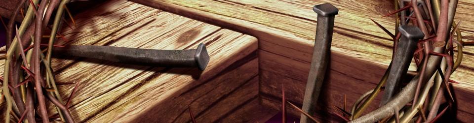

Each week is a week of tragedy. There are wars, there is ethnic violence, there is state-sponsored persecution or a natural disaster. There is hatred and jealousy, murders and war — pain and sorrow — every week.
But some weeks it strikes closer to home. A war seems more real to us when people in our own nation are involved, when we see pictures of people who are killed or homeless. An earthquake in one nation, a tsunami in another, a hurricane in a third.
Whether it is New Guinea or New Orleans, Senegal or Seattle, it all seems so senseless, so stupid, so ineffective. Even people with no moral foundation at all can see that this sort of thing is wrong. It is wrong for innocent people to suffer and die. It is evil.
How do we as Christians respond to the problem of evil?
With sorrow. With sadness. With revulsion. With perplexity. With questions that have no answers.
Why does God allow such things? Why does he allow innocent people to endure such pain and suffering? Couldn’t things have worked out in a less tragic way?
Philosophers and theologians can talk for hours about why God might allow evil, but all their ideas do not make the pain go away. Intellectual answers do not help our gut feelings. Their explanations cannot make the world seem tidy and sensible — because the world is not tidy and sensible. And Christian faith is not designed to make everything tidy and sensible. This can be seen in Christian history. Plenty of believers were martyred, and it takes more faith to be torn asunder than to live in relative comfort.
Well then, what do we say about the evils we see today?
First, that these sorts of things are indeed evil. Not just falling short. Not just a failure to do as good as we should. No, these things are evil, actively causing pain and suffering and death, and then more pain and suffering. This world has evil in it.
Right and wrong is not simply a matter of opinion — there is an objective and unchanging standard of right and wrong, defined not by humans but by God — and the evils that we see reported in the news are not just ideas where one person’s idea is just as good as another person’s idea, or one ethnic group’s idea against another’s. No, evil is defined by God. There has to be a God if there is going to be any definition of evil. And for reasons known best to God alone, God allows evil in this world.
Jesus commented on the problem of evil. He referred to a news report of his own day. There was a tower-building project at Siloam, and the whole thing collapsed and killed 18 people (see Luke 13:1~5). Was this some kind of divine punishment for their secret sins? No, said Jesus. These people were not any more sinful than anybody else.
Jesus did not say why the tower fell. He did not give clever reasons why God would allow such pain and suffering for these families. No doubt he had compassion on the victims, and he probably would have said something different if he had been talking to their families. But he brought the situation home to his audience. He made it personal for them: Unless you repent, you will also perish. The tragedy on other people became a lesson for us to repent.
If we have attitudes of jealousy, anger or resentment, we have already committed murder in our hearts. We do well to examine ourselves and our own attitudes, and we will see evil within ourselves. We need to be shocked and appalled by the wrong attitudes within ourselves. When the results of sin are made so clear, what we need to do is repent.
We can grieve for the victims. But Jesus is saying that we need to look at ourselves, too. Unless you repent, you will likewise perish. We can ask why God allowed people to die — but we also need to ask why God allows us to live. Each of us has had wrong thoughts, evil thoughts. Each of us has done something wrong — something evil. Why does God allow evil within us? None of us deserves to escape punishment, and yet God allows us to escape.
If we ask why there is evil, we should also ask why there is mercy. Why should God forgive us when we do not deserve to be forgiven?

Let us abhor evil, and hate evil. Let us also rejoice in God’s grace, and seek his grace. Let us repent. Let us fight against evil, starting with ourselves.
Jesus fought against evil, but he did not fight the way humans tend to fight. He fed the hungry, he healed the sick. He cast out demons, and he taught against religious oppression. But Jesus did not try to stop all evils through force. He did not suggest that we need better police or better family values. He did not suggest weapons-control laws or better engineering. Those things might help, but Jesus addressed a more fundamental need: repentance. We cannot conquer evil unless we are doing something about it within ourselves.
And ultimately, Jesus conquered evil — but he did it through suffering and death, not through brute force. And he also calls upon his followers to be willing to suffer and die. He assures us that we are conquerors if we follow him even through suffering and death. Our experiences with evil help shape us, help us grow in compassion, help us grow in love, and they even help us grow in faith — precisely because they test our faith. We are forced to trust in God because in such times, we can see the truth more clearly — there is really nothing else to trust in.
Someday, Jesus will use force to put down all remnants of evil. Right now, he does not. Right now, we as Christians live as aliens in a tainted and sinful world. We know by faith that a better world is coming. We know by faith that a better way of life is possible — but we also see in Jesus the perplexing message that this better way is achieved only through a time of evil and pain. We cannot understand it, but we trust God to work it out because we see that he was willing to bear the pain himself. He was willing to suffer from evil, too.
But there was joy set before Jesus, and there is joy set before us, too. If we suffer with him, we will also reign with him. If we are with him in his humility, we will also be with him in his glory.
We do not yet see all things put under the reign of Christ. Now, we see suffering and death. But through the resurrection of Christ, we can see that death itself has been conquered. All things will be brought under the authority of Jesus Christ, the Lord of compassion and mercy. Even as we grieve for the evils of today’s world, we can rejoice in our hope in Jesus Christ. We still grieve — we should grieve at evil — but we grieve with hope and faith in Jesus Christ.